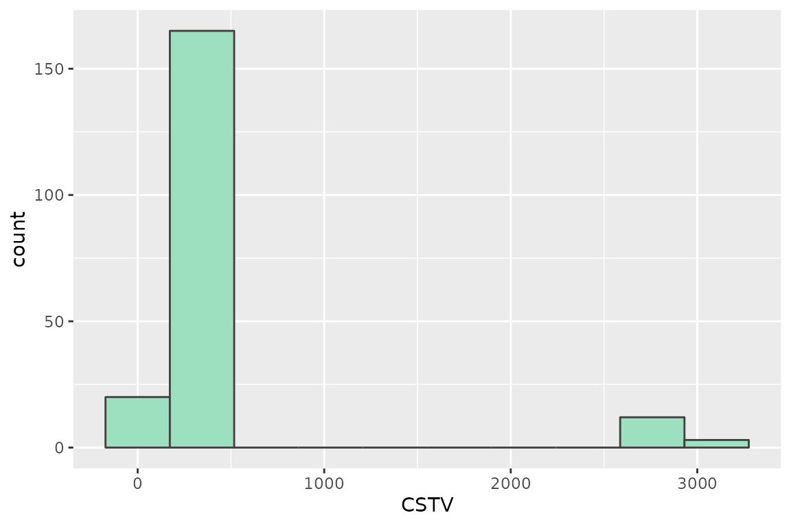
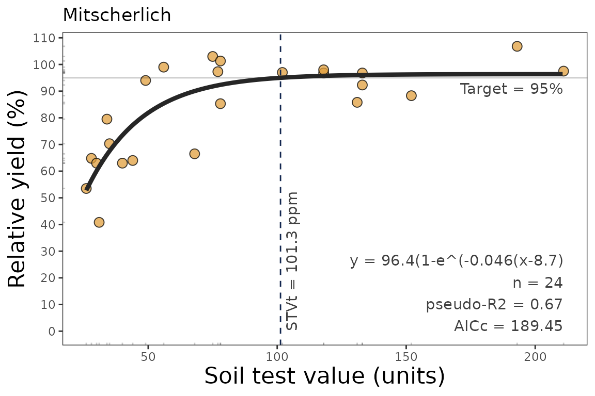
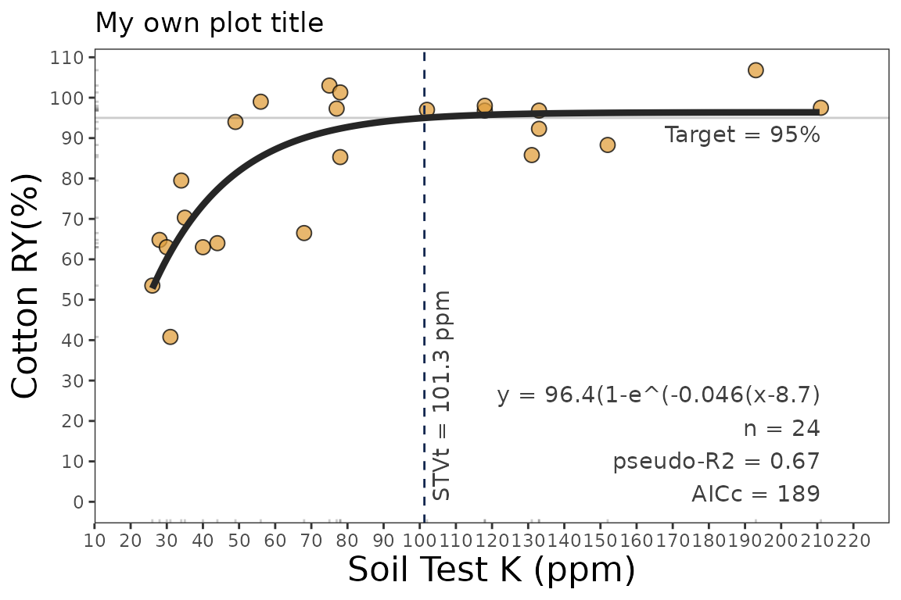

Mitscherlich-type response
Adrian Correndo & Austin Pearce
Source:vignettes/mitscherlich_tutorial.Rmd
mitscherlich_tutorial.Rmd
Description
This tutorial demonstrates the mitscherlich() function
for fitting a continuous response model and estimating a critical soil
test value. This function fits a Mitscherlich-type exponential
regression model that follows a diminishing growth curve, and is
sometimes also referred to as exponential “rise-to-the-max”. Cerrato and
Blackmer (1990) expressed it as:
\[ y = a * (1-e^{-c(x + b)}) \]
wherea = asymptote,b = X-intercept,c = curvature parameter.
This is used in the mitscherlich() function. The model
can also be expressed as
\[ y = a + (b - a) * e^{-cx} \]
a = asymptote,b = Y-intercept,c = curvature parameter.
The exponential model is extensively used in agriculture to describe
crops response to input since the biological meaning of its curved
response. The mitscherlich() function works automatically
with self-starting initial values to facilitate the model’s convergence.
The mitscherlich() function allows the user to control the
number of parameters, effectively constraining the response curve if
theoretically justified:
-
type = 1, "no restriction", or "free"(DEFAULT): three parameter model; \(y = a * (1-e^{-c(x + b)})\) -
type = 2, "asymptote 100", or "100": two parameter model where asymptote = 100% RY; \(y = 100 * (1-e^{-c(x + b)})\) -
type = 3, "asymptote 100 from 0", or "fixed":one parameter model in which only the curvature varies and asymptote = 100 and model goes through origin; \(y = 100 * (1-e^{-cx})\).
Disadvantages this model might include:
-
lacks a parameter that can be directly interpreted as the critical soil test value
the model cannot be evaluated at the asymptote as CSTV would go to
Inf-
a fixed RY target for CSTV may be a somewhat arbitrary choice, but 95% is commonly used
- model may not reach 95%, for which
NaNresults
- model may not reach 95%, for which
there is no apparent confidence interval for the derived CSTV. For this latter purpose, we recommend the user to use the
boot_mitscherlich()function for a reliable confidence interval estimation of parameters and CSTV via bootstrapping (resampling with replacement).
General Instructions
- Load your dataframe with soil test value (stv) and relative yield (ry) data.
- Specify the following arguments into the function
mitscherlich():-
typeselect the type of parameterization of the model (type = 3, 2, or 1; see above) -
data(optional) -
stv(soil test value) andry(relative yield) columns or vectors, -
target(default = 95) to calculate the STV at a specificrytarget. -
tidyTRUE-default- (produces a data.frame with results) or FALSE (store results as list) -
plotTRUE (produces a ggplot as main output) or FALSE (no plot, only results as data.frame) -
residTRUE (produces plots with residuals analysis) or FALSE (no plot)
-
- Run and check results.
- Check residuals plot, and warnings related to potential limitations of this model.
- Adjust curve plots as desired.
Tutorial
Suggested packages
# Install if needed
library(ggplot2) # Plots
library(dplyr) # Data wrangling
library(tidyr) # Data wrangling
library(purrr) # MappingLoad datasets
# Native fake dataset from soiltestcorr package
corr_df <- soiltestcorr::data_testFit mitscherlich()
1. Individual fits
1.1. Different number of parameters type = #
# Type = 1, no restriction (3 parameters)
mitscherlich(corr_df, STV, RY, type = 1)
#> # A tibble: 1 × 12
#> a b c equation target CSTV AIC AICc BIC R2 pvalue RMSE
#> <dbl> <dbl> <dbl> <chr> <dbl> <dbl> <dbl> <dbl> <dbl> <dbl> <dbl> <dbl>
#> 1 98.0 3.91 0.09 98(1-e^(-… 95 35.5 1022. 1022. 1033. 0.54 0 9.78
# Type = 2, fixed asymptote value at 100 (2 parameters)
mitscherlich(corr_df, STV, RY, type = 2)
#> # A tibble: 1 × 12
#> a b c equation target CSTV AIC AICc BIC R2 pvalue RMSE
#> <dbl> <dbl> <dbl> <chr> <dbl> <dbl> <dbl> <dbl> <dbl> <dbl> <dbl> <dbl>
#> 1 100 5.49 0.08 100(1-e^(… 95 33.8 1021. 1021. 1029. 0.53 0 9.81
# Type = 3, fixed origin at 0 and asymptote at 100 (1 parameters)
mitscherlich(corr_df, STV, RY, type = 3)
#> # A tibble: 1 × 12
#> a b c equation target CSTV AIC AICc BIC R2 pvalue RMSE
#> <dbl> <dbl> <dbl> <chr> <dbl> <dbl> <dbl> <dbl> <dbl> <dbl> <dbl> <dbl>
#> 1 100 0 0.11 100(1-e^(… 95 27.8 1031. 1032. 1037. 0.49 NA 10.31.2. tidy = FALSE
It returns a LIST (may more efficient for multiple fits at once)
# Using dataframe argument, tidy = FALSE -> return a LIST
mitscherlich(data = corr_df, STV, RY, target = 90, tidy = FALSE)
#> $a
#> [1] 97.98
#>
#> $b
#> [1] 3.91
#>
#> $c
#> [1] 0.09
#>
#> $equation
#> [1] "98(1-e^(-0.089(x+3.9)"
#>
#> $target
#> [1] 90
#>
#> $CSTV
#> [1] 24.4
#>
#> $AIC
#> [1] 1021.64
#>
#> $AICc
#> [1] 1021.94
#>
#> $BIC
#> [1] 1033.32
#>
#> $R2
#> [1] 0.54
#>
#> $pvalue
#> [1] 0
#>
#> $RMSE
#> [1] 9.781.3. Alternative using the data frame vectors
You can call stv and ry vectors using the
$. The tidy argument still applies for
controlling the output type.
fit_vectors_list <-mitscherlich(stv = corr_df$STV,
ry = corr_df$RY,
tidy = FALSE)
fit_vectors_tidy <-mitscherlich(stv = corr_df$STV,
ry = corr_df$RY,
tidy = TRUE)2. Multiple fits at once
# Example 1. Fake dataset manually created
data_1 <- data.frame("RY" = c(65,80,85,88,90,94,93,96,97,95,98,100,99,99,100),
"STV" = c(1,2,3,4,5,6,7,8,9,10,11,12,13,14,15))
# Example 2. Native fake dataset from soiltestcorr package
data_2 <- soiltestcorr::data_test
# Example 3. Native dataset from soiltestcorr package, Freitas et al. (1966), used by Cate & Nelson (1971)
data_3 <- soiltestcorr::freitas1966 %>%
rename(STV = STK)
data.all <- bind_rows(data_1, data_2, data_3, .id = "id")Note: the stv column needs to have the same name for all
datasets if binding rows.
2.1. Using map()
# Run multiple examples at once with map()
data.all %>%
nest(data = c("STV", "RY")) %>%
mutate(model = map(data, ~ mitscherlich(stv = .$STV, ry = .$RY))) %>%
unnest(model)
#> # A tibble: 3 × 14
#> id data a b c equation target CSTV AIC AICc BIC
#> <chr> <list> <dbl> <dbl> <dbl> <chr> <dbl> <dbl> <dbl> <dbl> <dbl>
#> 1 1 <tibble> 98.7 2.07 0.37 98.7(1-e^(… 95 6.8 64.0 68.0 66.8
#> 2 2 <tibble> 98.0 3.91 0.09 98(1-e^(-0… 95 35.5 1022. 1022. 1033.
#> 3 3 <tibble> 96.4 -8.69 0.05 96.4(1-e^(… 95 101. 187. 189. 192.
#> # ℹ 3 more variables: R2 <dbl>, pvalue <dbl>, RMSE <dbl>2.2. Using group_modify()
Alternatively, with group_modify(), nested data is not
required. However, it still requires a grouping variable (in this case,
id) to identify each dataset. group_map() may
also be used, though list_rbind() is required to return a
tidy data frame of the model results instead of a list.
data.all %>%
group_by(id) %>%
group_modify(~ soiltestcorr::mitscherlich(data = ., STV, RY))
#> # A tibble: 3 × 13
#> # Groups: id [3]
#> id a b c equation target CSTV AIC AICc BIC R2
#> <chr> <dbl> <dbl> <dbl> <chr> <dbl> <dbl> <dbl> <dbl> <dbl> <dbl>
#> 1 1 98.7 2.07 0.37 98.7(1-e^(-0.… 95 6.8 64.0 68.0 66.8 0.97
#> 2 2 98.0 3.91 0.09 98(1-e^(-0.08… 95 35.5 1022. 1022. 1033. 0.54
#> 3 3 96.4 -8.69 0.05 96.4(1-e^(-0.… 95 101. 187. 189. 192. 0.67
#> # ℹ 2 more variables: pvalue <dbl>, RMSE <dbl>3. Bootstrapping
A suitable alternative for obtaining confidence intervals for parameters or derived quantities is bootstrapping. Bootstrapping is a resampling technique (with replacement) that draws samples from the original data with the same size. If you have groups within your data, you can specify grouping variables as arguments in order to maintain, within each resample, the same proportion of observations than in the original dataset.
This function returns a table with as many rows as the resampling size (n) containing the results for each resample.
boot_mits <- boot_mitscherlich(corr_df, STV, RY, target = 90, n = 200)
#> Warning: There were 200 warnings in `dplyr::mutate()`.
#> The first warning was:
#> ℹ In argument: `model = map(...)`.
#> ℹ In group 1: `boot_id = 1`.
#> Caused by warning in `nls.lm()`:
#> ! lmdif: info = -1. Number of iterations has reached `maxiter' == 50.
#> ℹ Run `dplyr::last_dplyr_warnings()` to see the 199 remaining warnings.
boot_mits %>% head(n = 5)
#> # A tibble: 5 × 12
#> boot_id a b c target CSTV AIC AICc BIC R2 pvalue RMSE
#> <dbl> <dbl> <dbl> <dbl> <dbl> <dbl> <dbl> <dbl> <dbl> <dbl> <dbl> <dbl>
#> 1 1 1396. -39.7 0 90 182. 1046. 1046. 1058. 0.41 0 10.7
#> 2 2 487. 1000 0 90 2845. 1109. 1110. 1121. 0.03 0.140 13.5
#> 3 3 894. -47.6 0 90 169. 1067. 1067. 1079. 0.42 0 11.5
#> 4 4 706. -51.0 0 90 172. 1041. 1042. 1053. 0.41 0 10.5
#> 5 5 954. -53.7 0 90 162. 1057. 1057. 1069. 0.45 0 11.1
# CSTV Confidence Interval
quantile(boot_mits$CSTV, probs = c(0.025, 0.5, 0.975))
#> 2.5% 50% 97.5%
#> 163.1775 186.9000 2863.3400
# Plot
boot_mits %>%
ggplot2::ggplot(aes(x = CSTV))+
geom_histogram(color = "grey25", fill = "#9de0bf", bins = 10)
4. Plots
4.1. Calibration Curve
We can generate a ggplot with the same mitscherlich()
function.
We just need to specify the argument plot = TRUE.
data_3 <- soiltestcorr::freitas1966
plot_mit <- mitscherlich(data_3, STK, RY, plot = TRUE)
plot_mit
4.2 Fine-tune the plots
As ggplot object, plots can be adjusted in several ways, such as modifying titles and axis scales.
plot_mit +
# Main title
ggtitle("My own plot title")+
# Axis titles
labs(x = "Soil Test K (ppm)",
y = "Cotton RY(%)") +
# Axis scales
scale_x_continuous(limits = c(20,220),
breaks = seq(0,220, by = 10))
4.3. Residuals
Set the argument resid = TRUE.
# Residuals plot
mitscherlich(data_3, STK, RY, resid = TRUE)
#> # A tibble: 1 × 12
#> a b c equation target CSTV AIC AICc BIC R2 pvalue RMSE
#> <dbl> <dbl> <dbl> <chr> <dbl> <dbl> <dbl> <dbl> <dbl> <dbl> <dbl> <dbl>
#> 1 96.4 -8.69 0.05 96.4(1-e^… 95 101. 187. 189. 192. 0.67 0 10.2References
Cerrato, M. E., & Blackmer, A. M. (1990). Comparison of models for describing corn yield response to nitrogen fertilizer. Agronomy Journal, 82(1), 138–143. https://doi.org/10.2134/agronj1990.00021962008200010030x
Melsted, S.W. and Peck, T.R. (1977). The Mitscherlich-Bray Growth Function. In Soil Testing (eds T. Peck, J. Cope and D. Whitney). 10.2134/asaspecpub29.c1